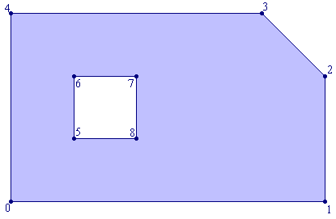
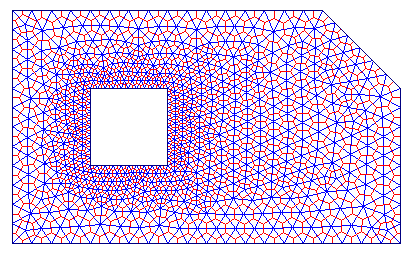
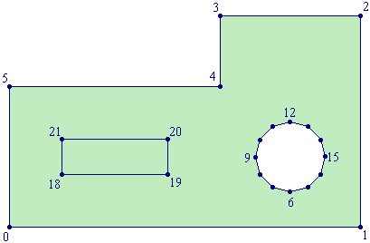
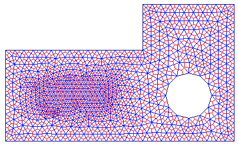
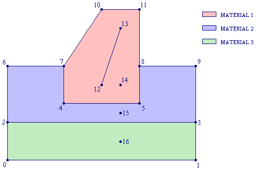
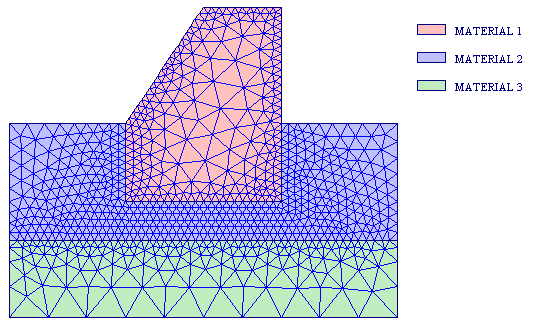
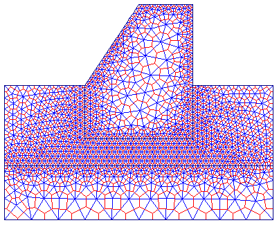

Using EasyMesh
Example 1:
Consider the following domain:

Points 0-1-2-3-4 define the boundary of the domain, and they represent a boundary chain. The remaining points: 5-6-7-8 define the hole, and represent a hole chain.
To generate the mesh for this domain you have to create the following input file:
#-----------#
# Example 1 #
#-----------#
#=========
| POINTS |
=========#
9 # number of points #
# Nodes which define the boundary #
0: 0.0 0.0 0.25 1
1: 5.0 0.0 0.25 2
2: 5.0 2.0 0.25 2
3: 4.0 3.0 0.25 3
4: 0.0 3.0 0.25 3
# Nodes which define the hole #
5: 1.0 1.0 0.1 4
6: 1.0 2.0 0.1 4
7: 2.0 2.0 0.1 4
8: 2.0 1.0 0.1 4
#===========
| SEGMENTS |
===========#
9 # Number of segments #
# Boundary segments #
0: 0 1 1
1: 1 2 2
2: 2 3 2
3: 3 4 3
4: 4 0 3
# Hole segments #
5: 5 6 4
6: 6 7 4
7: 7 8 4
8: 8 5 4
and name it: example1.d. It is essential that the nodes which define the boundary chain (0-1-2-3-4) are inserted in the anticlockwise direction, and the nodes which define the hole chain (5-6-7-8) are inserted in the clockwise direction.
Then run EasyMesh with the following command:
EasyMesh example1 +dxf
As a result you will obtain the following grid:

where Delaunay triangulation is shown in blue, while the Voronoi polygons are shown in red. You are not limited in the number of holes, but you can generate only one domain at the time with EasyMesh.
Note:
Example 2:
In the following example, it will be demonstrated how can you generate regions inside the domain with smaller/larger elements. It will also be explained how to handle more complex shapes, like circular holes for example.
The following picture defines the geometry under consideration. On the right of the domain there is a circular hole defined with 12 points (6- ... -17), and on the left is a 'false' hole (points 18- ... -21) used to refine the grid in that region.

Now, use your favourite text editor to create the following input file:
#-----------#
# Example 2 #
#-----------#
#=========
| POINTS |
=========#
22 # number of points #
# Nodes which define the boundary #
0: 0 0 0.2
1
1: 5 0 0.2
1
2: 5 3 0.2
1
3: 3 3 0.2
1
4: 3 2 0.2
1
5: 0 2 0.2
1
# circular hole #
6: 4.00 0.50 10.0 2
7: 3.75 0.567 10.0 2
8: 3.567 0.75 10.0 2
9: 3.50 1.00 10.0 2
10: 3.567 1.25 10.0 2
11: 3.75 1.433 10.0 2
12: 4.00 1.50 10.0 2
13: 4.25 1.433 10.0 2
14: 4.433 1.25 10.0 2
15: 4.50 1.00 10.0 2
16: 4.433 0.75 10.0 2
17: 4.25 0.567 10.0 2
# Nodes which define the false hole #
18: 0.75 0.75 0.1 0
19: 2.25 0.75 0.1 0
20: 2.25 1.25 0.1 0
21: 0.75 1.25 0.1 0
#===========
| SEGMENTS |
===========#
22 # Number of segments #
# Boundary segments #
0: 0 1 1
1: 1 2 1
2: 2 3 1
3: 3 4 1
4: 4 5 1
5: 5 0 1
# Hole segments #
6: 6 7 2
7: 7 8 2
8: 8 9 2
9: 9 10 2
10: 10 11 2
11: 11 12 2
12: 12 13 2
13: 13 14 2
14: 14 15 2
15: 15 16 2
16: 16 17 2
17: 17 6 2
# False hole segments #
18: 18 19 0
19: 19 20 0
20: 20 21 0
21: 21 18 0
and save this under the name example2.d. Then run EasyMesh with the following comand:
EasyMesh example2 +dxf
to obtain the following result:

Few things have to be noted about this example:
Example 3:
The final example demonstrates how to handle domains made up from more than one material, but also how to use lines in the interior of the domain for local refining/coarsening.

Points 0-1-3-9-8-11-10-7-6-2 define the boundary chain of the whole region. In order to define a domain with several materials, it is necessary to introduce frontiers between them. Points 2-3, 7-4-5-8 define these frontiers. Points 12-13 define the interior line which serves for coarsening the mesh in the red region. Points 14, 15 and 16 are quite particular, because they do not belong to any segment. They are used as material markers. In fact, to elements in red, blue and green region, will be assigned the boundary markers of points 14, 15 and 16.
Now create the input file example3.d for this example:
#-----------#
# Example 3 #
#-----------#
#********#
17 # Points #
#********#
0: 0 0 0.5 1
1: 5 0 0.5 1
2: 0 1 0.1 1
3: 5 1 0.1 1
4: 1.5 1.5 0.1 4
5: 3.5 1.5 0.1 4
6: 0 2.5 0.25 1
7: 1.5 2.5 0.1 2
8: 3.5 2.5 0.1 2
9: 5 2.5 0.25 1
10: 2.5 4 0.1 2
11: 3.5 4 0.1 2
# line for coarsening #
12: 2.5 2 0.4 0
13: 3 3.5 0.4 0
# material markers #
14: 3 3 0 1 # material
1 (red) #
15: 3 1.25 0 2 # material 2 (blue)
#
16: 3 0.5 0 3 # material 3 (green)
#
#**********#
15 # Segments #
#**********#
# domain contour #
0: 0 1 1
1: 1 3 1
2: 3 9 1
3: 9 8 1
4: 8 11 2
5: 11 10 2
6: 10 7 2
7: 7 6 1
8: 6 2 1
9: 2 0 1
# frontier between green and blue #
10: 3 2 3
# frontier between blue and red#
11: 8 5 4
12: 5 4 4
13: 4 7 4
14: 12 13 0
Then run EasyMesh with the usual command:
EasyMesh example3 +dxf
and as a result you will obtain the following grid:


Three things have to be noted in this example: